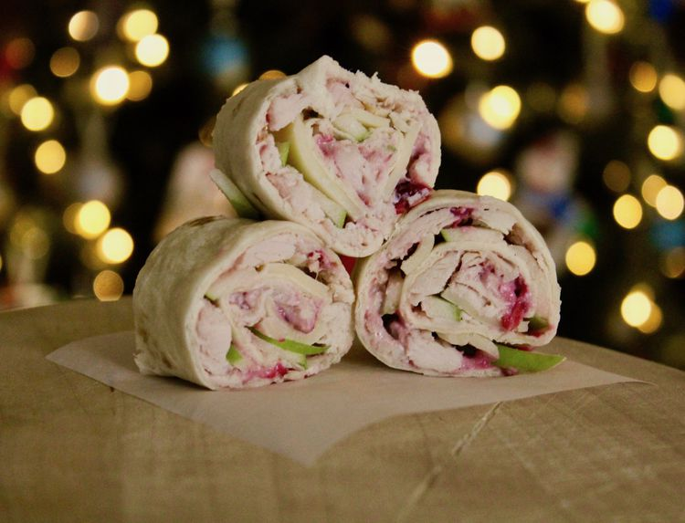

Cranberry Turkey Pinwheels

Description
These quick and easy turkey and cranberry pinwheels are a great way to use up leftover cranberry sauce from Thanksgiving. You can make them any time of the year with deli turkey and canned cranberry sauce.
Ingredients
- ½ cup cream cheese, softened
- ½ cup whole-berry cranberry sauce
- 4 (10 inch) flour tortillas
- 12 ounces thinly sliced roast turkey
- 4 ounces thinly sliced Swiss cheese, chopped
- 2 ounces thinly sliced Granny Smith apple
Steps
- Mix cream cheese and cranberry sauce together in a bowl until well combined.
- Spread 1/4 of the cream cheese mixture over the entire surface of each tortilla, then cover with turkey, Swiss, and apple. Roll tortillas tightly over fillings and wrap in plastic wrap; refrigerate for at least 1 hour.
- Unwrap tortillas; slice each one into eight pieces and serve.